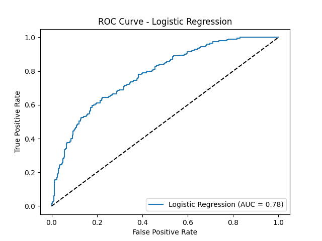
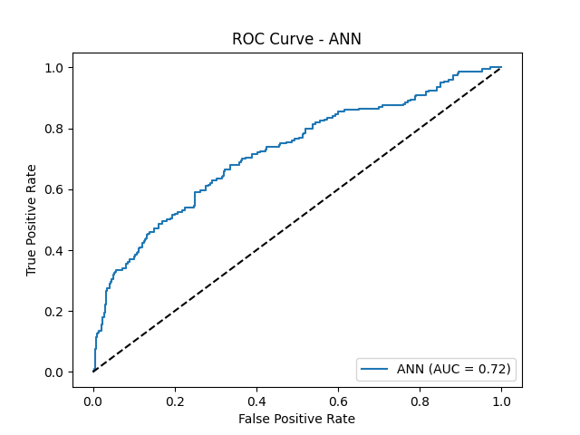
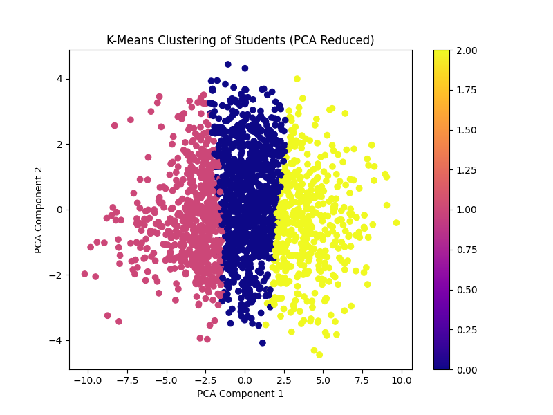

Last updated: 2025-01-26 10:06:52
Our aim is to predict primary school students at risk for writing difficulties using machine learning...
Logistic Regression AUC: 0.780
ANN AUC: 0.721
 This visualization shows how students are grouped based on various features using K-Means clustering.
From our analysis, logistic regression was more effective in predicting students at risk...
The analysis was done using Python with libraries like scikit-learn, Pandas, and NumPy...